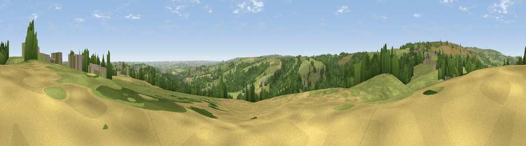

Viewpoint near Holmesfield
#21843 in England · top 31% of its area beats it · near HolmesfieldThe view, rendered

A 360° render of this exact spot computed from the terrain model, tree cover and land cover — summer colours, afternoon light, calibrated against photographs of famous viewpoints. Real trees, hedges and buildings will differ in detail.
The panorama
Grey silhouette: terrain skyline in each direction (720 bearings, Earth curvature and refraction included). Dashed green: skyline with trees (+15 m) and buildings (+8 m) as obstacles. Blue strip: how far the ground is visible on each bearing.
Where the view opens
Wedge length = distance to the farthest visible ground on that bearing (vegetation-aware). Rings at 10, 25 and 50 km.
What fills the view
65% grassland · 27% woodland · 6% cropland · 2% built-up
Angular shares of the visible panorama (visual magnitude), not map area. Landscape diversity 0.39 (0–1 Shannon).
Key numbers
More beautiful places nearby
The staircase of upgrades: each row has a higher view potential than everything closer. Driving times are estimates from straight-line distance, calibrated against real road routing — check an actual route before setting out.
| Place | Direction | Drive | Score |
|---|---|---|---|
| Viewpoint near Holmesfield | N · 0 km | ~2 min | 52.1 |
| Viewpoint near Holmesfield | NW · 2 km | ~6 min | 69.4 |
| Viewpoint near Hathersage | NW · 8 km | ~16 min | 70.9 |
| High Rake | WSW · 11 km | ~20 min | 71.1 |
| Viewpoint near Thornhill | NW · 16 km | ~28 min | 74.1 |
| Viewpoint near Wharncliffe Side | N · 19 km | ~32 min | 75.2 |
| Tissington Hill | SSW · 29 km | ~46 min | 75.5 |
| Wild Bank | WNW · 38 km | ~57 min | 76.2 |
53.29380, -1.54051 · source: screening · position refined by local search. Computed location — check access rights before visiting.